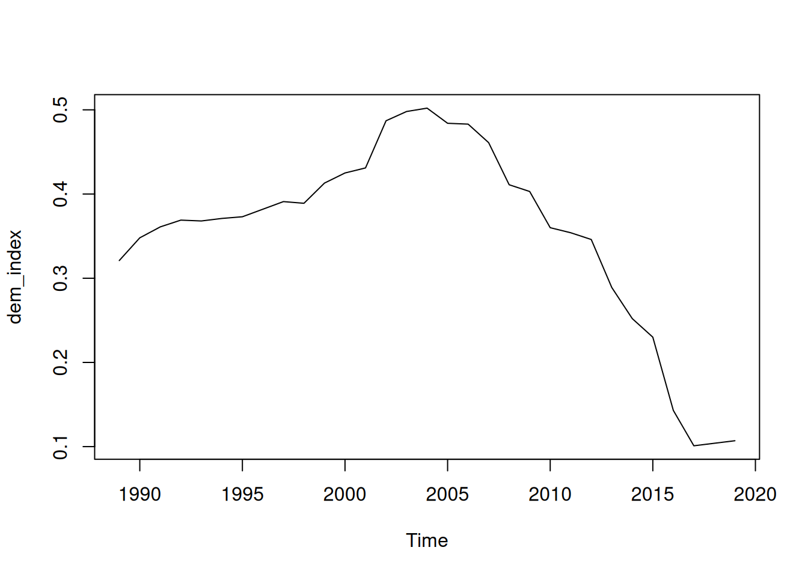
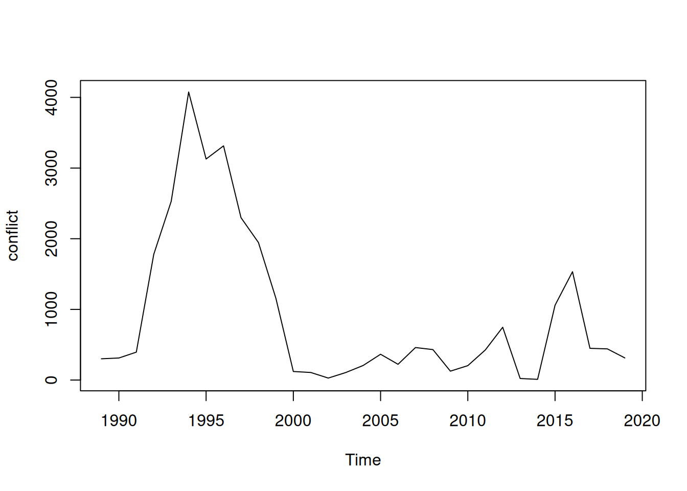

In this last session, we will focus on time series. The first part of this class will be about some reminders of how to model a time series. The second part will be dedicated to the analysis of a bivariate time series and the third part will study time series cross-sectional (TSCS) data. Finally, a few words will be said about multi-level modelling with OLS.
Time Series
Time series data are a specific form of data. It is specific because first of all the observations are ordered in time and secondly, you only have one observation for each time period (except when you have Time Series Cross-Sectional data). Every observation comes from the same unit (for example a country). Time series are data that permit us to analyse the evolution of a variable across time of a specific unit.
The different observations of a time series are not independent because they are related to each other, as the observations come from the same unit. For example, the GDP of a country measured at year T is related to the GDP at year T-1. This is the key concern for time series analyses because the lack of independence between observations goes against the independence assumption from OLS regression techniques. This leads to two aspects of time series that you need to consider in your analysis: stationary and dependence.
Stationary
A stationary time series is a time series where no trend exists in the data. In other words, if you divide your sample in sub-samples, you should obtain the same mean and standard deviation in each sub-sample. This means that you should not find a shift upward or downward over time in your time series (see Jan Rovny notes for more information on this subject).
The example below represents a time series about the number of births in New York by Month over 15 years (data collected by Newton).
Looking at the graph, it seems that a trend exists. However, just looking at the graph is not sufficient to show the existence of a trend. You can use the Dickey-Fuller test to provide more evidence into the presence of a trend in the data. The null hypothesis is “non-stationary”. The p-value of the test in this case is 0.01, meaning that we reject \(H_0\). The time series is stationary.
library(tseries)
Registered S3 method overwritten by 'quantmod':
method from
as.zoo.data.frame zoo
adf.test(births_ts)
Warning in adf.test(births_ts): p-value smaller than printed p-value
Augmented Dickey-Fuller Test
data: births_ts
Dickey-Fuller = -5.9547, Lag order = 5, p-value = 0.01
alternative hypothesis: stationary
If you have a trend, there are different ways to deal with it, you can use regression to remove the trend, or you can use detrending or differencing (see Jan Rovny notes for more information on this subject).
Dependence
Dependence refers to the relationship between two observations from two different time point (\(y_{t}\) and \(y_{t+h}\)). Dependence is interested on how long the past matters for future observations. While there is lack of independence between observations in a time series, meaning that a correlation exists between certain observations, not all observations are correlated to each other. The dependence of a time series looks into how many time points one observation is correlated to (the size of \(h\)). A weakly dependent time series is is one where the correlation between \(y_{t}\) and \(y_{t+h}\) goes quickly to 0 when \(h\) increases (see Jan Rovny notes for more information on this subject).
Times Series process
As explained, the difficulty when analysing time series resides in the fact that past values affect present and future values. They are 4 common processes that are used to model the dependence between observations (see Jan Rovny notes for more information on this subject):
White Noise
Moving Average (MA)
Autoregression (AR)
Integration (example, Random Walk)
You can find more than one of these processes in a time series, ARMA or ARIMA process.
Identification
To identify the process, you can use the autocorrelation (ACF) and partial autocorrelation (PACF) function.
Another way is to use the auto.arima() function from the forecast package (this is not foolproof). This will automatically tell you which types of processes are present in your data.
Estimation
Once you have identified the model that fits best your data, you can estimate the coefficients of the ARIMA (autoregression-integration-moving average) model. You can use the function arima().
If you have correctly identified your model, the residuals of the model should be white noise. You can check that by plotting the residuals or by using a formal test. In R, you can use the function Box.test() that computes a Ljung-Box test. If you can reject the \(H_0\), this means that your residuals behave like white noise, which is the case here.
In the previous section, we studied how to model a time series variable. However, sometimes you will be interested in more than one variable and in the relationship between those variables. This section is dedicated to the study of a bivariate time series, meaning that you are interested in analysing two times series and their relationships.
Association between times series variables permits the study of causality. When you have cross-sectional data at only one point in time, it is complicated to assess the causality between variables because if you do not have a specific design, the regression will only be a correlation analysis between the two variables. However, when you have time series, the temporality of the data helps you determine the causality. Indeed, if \(x\rightarrow y\), you should see a change in \(x\) before seeing the change of \(y\), meaning that a change at \(x_{t-h}\) should lead to a change in \(y_t\). In other words, if there is causality, you should find a correlation between a lagged value of \(x\) (\(=x_{t-h}\)) and \(y_{t}\) . In contrast, no correlation should exist between \(y_{t-h}\) and \(x_t\).
There exist different ways to study the causality between two time series (see Jan Rovny notes for more information on this subject):
Prewhitening
Granger causality
Error correction models of cointegration
To learn more about causality analysis with time series, we will use a dataset that has been constructed based on the VDEM dataset and the UCDP dataset. The dataset contains information on the number of deaths linked to civil conflict in Turkey as well as a democratic index. The objective is to understand if democratisation causes civil conflict or not.
library(vdemdata)data("vdem")demo <-subset(vdem, country_name =="Türkiye"& year>1988& year <2020)library(readr)ucdp <-read_csv("https://ucdp.uu.se/downloads/ged/ged201.csv")
Warning: One or more parsing issues, call `problems()` on your data frame for details,
e.g.:
dat <- vroom(...)
problems(dat)
Rows: 225385 Columns: 49
── Column specification ────────────────────────────────────────────────────────
Delimiter: ","
chr (18): relid, code_status, conflict_name, dyad_name, side_a, side_b, sou...
dbl (29): id, year, active_year, type_of_violence, conflict_dset_id, confli...
dttm (2): date_start, date_end
ℹ Use `spec()` to retrieve the full column specification for this data.
ℹ Specify the column types or set `show_col_types = FALSE` to quiet this message.
conf <-subset(ucdp, country =="Turkey")conf_year <-aggregate(best ~ year, data = conf, FUN = sum)df <-merge(demo, conf_year, by ="year", all.x =TRUE)df$best[is.na(df$best)] <-0# no conflict = 0#v2x_libdem = democracy#best = conflict deaths
dem_index<-ts(df$v2x_libdem, start =min(df$year), frequency =1)plot.ts(dem_index)

conflict<-ts(df$best, start =min(df$year), frequency =1)plot.ts(conflict)

Prewhitening
The idea is that you can study causality by looking at the correlation at different lags and leads of the two series (meaning that you look at the correlation between \(x_t\) and \(y_{t+1}\), \(y_{t+2}\)…). You can only look at the cross-correlation if your the residuals of the two time series are white noise. This means that you first need to model your two times series to eliminated all the error aggregation processes. This is called pre-whitening.
Starting with the ACF and PACF:
library(tseries)adf.test(dem_index)
Augmented Dickey-Fuller Test
data: dem_index
Dickey-Fuller = -1.5275, Lag order = 3, p-value = 0.7547
alternative hypothesis: stationary
Based on the test and graphs, we see, first of all, that the time series is not stationary. Secondly, we find that the ACF goes to 0 and the PACF only has 1 significant lag. We can model and ARIMA(1,1,0) model for the democratic index. For the conflict time series, we found a similar model.
adf.test(conflict)
Augmented Dickey-Fuller Test
data: conflict
Dickey-Fuller = -2.5129, Lag order = 3, p-value = 0.3753
alternative hypothesis: stationary
Finally, you should check the that the residuals of your model are white noise. For both residuals of the time series, we can reject the \(H_0\), meaning that residuals are white noise.
Now that you have done the pre-whitening step, you can look at the cross-correlation of your residuals using the ccf() function. The order in which you specify each variable is important to understand the graphical output of the function.
The graph shows that at lag 8, there is a significant cross-correlation. This means that the democratic index (at t-8) influences the conflict variable (at t).
Granger causality
Another way to study causality is to use the Granger Causality method. In this case, you do not need to first model your data, you can directly conduct the test. The Granger causality rests on the idea that, as your dependent variable \(y\) is time series, part of the explanation rests on previous observations of \(y\). However, if \(x\) causes \(y\) then using previous observations of \(x\) to explain \(y\) should improve the model. To be sure of the causality, you should do two Granger tests, where you exchange the dependent and independent variables so that you test if \(x \rightarrow y\) or if \(y \rightarrow x\).
The function you need to use is grangertest()from the lmtest package.
grangertest(DV ~ IV, order=p, data):
DV: dependent variable
IV: independent variable
order = p: p is the number of lags you want to take into account in the regression
data: name of your dataset
library(lmtest)
Loading required package: zoo
Attaching package: 'zoo'
The following objects are masked from 'package:base':
as.Date, as.Date.numeric
grangertest(best~v2x_libdem,order=4, data=df)
Granger causality test
Model 1: best ~ Lags(best, 1:4) + Lags(v2x_libdem, 1:4)
Model 2: best ~ Lags(best, 1:4)
Res.Df Df F Pr(>F)
1 18
2 22 -4 0.621 0.6534
grangertest(v2x_libdem~best, order=4,data=df)
Granger causality test
Model 1: v2x_libdem ~ Lags(v2x_libdem, 1:4) + Lags(best, 1:4)
Model 2: v2x_libdem ~ Lags(v2x_libdem, 1:4)
Res.Df Df F Pr(>F)
1 18
2 22 -4 1.3595 0.287
The results of the Granger Causality tests show that neither democracy index causes conflict and neither conflict causes democracy index.
I showed you how to compute pre-whitening and Granger causality, but that is only correct if your times series are stationary. It does not work if your time series are co-integrated (see Jan Rovny notes for more information on this subject).
Time Series Cross-Sectional Analysis
In the previous sections, we have been concerned about a time series about one unit across time (example: evolution of democracy index of Turkey over 15 years). However, it is possible that you want to study the relationships between two variables across time for more than one unit (you may want to compare different countries). In this case, we speak about Times Series Cross-Section. When using times series cross-sectional analysis, you make an assumption about your causal mechanism. Indeed, you make the assumption that the relationships between your variables are the same across the different units.
Time Series Cross-section analysis demands that we think about potential problems leading to biased estimation. First of all, you are comparing different unit across times. These units may have specific characteristics that stay the same across time. History, culture, etc shape a country leading to certain inherent characteristics of a unit being different across countries. If you do not take into account this possible difference, you may have an omitted variable bias in your analysis.
Secondly, there are different ways in which time series can lead to bias in estimating the standard errors, making testing of coefficient significance unreliable (see Jan Rovny notes for more information on this subject).
We will use the same example as the previous section but we are adding new countries to the dataset.
library(vdemdata)library(readr)library(dplyr)
Attaching package: 'dplyr'
The following objects are masked from 'package:stats':
filter, lag
The following objects are masked from 'package:base':
intersect, setdiff, setequal, union
countries <-c("Turkey", "Nigeria", "Colombia", "Philippines", "Thailand") # example set# --- Democracy (V-Dem) ---data("vdem")demo <- vdem %>%filter(country_name %in% countries) %>%select(country_name, year, v2x_libdem)# --- Conflict (UCDP GED summary by country-year) ---ucdp <-read_csv("https://ucdp.uu.se/downloads/ged/ged201.csv")
Warning: One or more parsing issues, call `problems()` on your data frame for details,
e.g.:
dat <- vroom(...)
problems(dat)
Rows: 225385 Columns: 49
── Column specification ────────────────────────────────────────────────────────
Delimiter: ","
chr (18): relid, code_status, conflict_name, dyad_name, side_a, side_b, sou...
dbl (29): id, year, active_year, type_of_violence, conflict_dset_id, confli...
dttm (2): date_start, date_end
ℹ Use `spec()` to retrieve the full column specification for this data.
ℹ Specify the column types or set `show_col_types = FALSE` to quiet this message.
Looking at the problem of unit effects, this problem means that we may have different levels of our dependent variable depending on the unit. For example, the GDP of China and India may be different because they had different economic developments, etc. So, there is a significant difference between the units, meaning that “all else is not equal” when looking at your regression estimates. Before analysing your data, you need to check if there is a unit effect or not. You can do this descriptively by using graphs or you can do it in a more formal way using ANOVA tests.
Graphically, you can use the coplot() function once you have transformed your dataset as a TSCS dataset with the function pdata.frame(). Formally, you can use the aov() function to conduct the ANOVA test.
pdata.frame(data,index=c())
data: name of your dataset
index=c(): in c() you specify the name of your variable which corresponds to the unit variable and the time variable
coplot(variable ~ T | U, type="l",data)
variable: dependent variable
T: time variable
U: unit variable,
type=“l”: specify you want a line graph
data: name of your dataset
aov(Variable ~U, data)
variable: dependent variable
U: unit variable
data: name of your dataset
If you detect some unit effects in your data, there exist two solutions to deal with this problem: fixed effects or random effects.
library(plm)
Attaching package: 'plm'
The following objects are masked from 'package:dplyr':
between, lag, lead
Df Sum Sq Mean Sq F value Pr(>F)
country_name 3 22671546 7557182 6.915 0.000171 ***
Residuals 256 279775873 1092875
---
Signif. codes: 0 '***' 0.001 '**' 0.01 '*' 0.05 '.' 0.1 ' ' 1
Based on the graphs and on the ANOVA, we see that there is a unit effect in our dataset.
Fixed effects
When adding fixed effects, you want to take into account all the unobserved variables that are time invariant to the unit. Fixed effects can be computed in two ways: either with a time-demeaned equation (fixed effects estimator) or with a dummy variable estimator (see Jan Rovny notes for more information on this subject).
In R, you can use the plm() function from the plm package.
Oneway (individual) effect Within Model
Call:
plm(formula = conflict_deaths ~ v2x_libdem, data = data, model = "within",
index = c("country_name", "year"))
Balanced Panel: n = 4, T = 65, N = 260
Residuals:
Min. 1st Qu. Median 3rd Qu. Max.
-1309.36 -477.81 -147.86 314.24 8897.93
Coefficients:
Estimate Std. Error t-value Pr(>|t|)
v2x_libdem 3167.8 520.0 6.092 4.088e-09 ***
---
Signif. codes: 0 '***' 0.001 '**' 0.01 '*' 0.05 '.' 0.1 ' ' 1
Total Sum of Squares: 279780000
Residual Sum of Squares: 244230000
R-Squared: 0.12705
Adj. R-Squared: 0.11336
F-statistic: 37.1126 on 1 and 255 DF, p-value: 4.0883e-09
The results show that the democratic index variable positively influences the number of deaths due to conflicts even when controlling for country fixed effects.
If you want the dummy variable estimator, you can use the lm() function and add a dummy factor for the unit variable.
Call:
lm(formula = conflict_deaths ~ v2x_libdem + factor(country_name) -
1, data = data)
Residuals:
Min 1Q Median 3Q Max
-1309.4 -477.8 -147.9 314.2 8897.9
Coefficients:
Estimate Std. Error t value Pr(>|t|)
v2x_libdem 3167.8 520.0 6.092 4.09e-09 ***
factor(country_name)Colombia -795.2 234.4 -3.392 0.000805 ***
factor(country_name)Nigeria 203.8 164.2 1.241 0.215710
factor(country_name)Philippines -588.2 190.3 -3.091 0.002220 **
factor(country_name)Thailand -623.5 165.8 -3.760 0.000210 ***
---
Signif. codes: 0 '***' 0.001 '**' 0.01 '*' 0.05 '.' 0.1 ' ' 1
Residual standard error: 978.7 on 255 degrees of freedom
Multiple R-squared: 0.2981, Adjusted R-squared: 0.2844
F-statistic: 21.66 on 5 and 255 DF, p-value: < 2.2e-16
You can see, that with the dummy estimator, we found the same results for in this model than in the one with the within estimator.
Random effects
In random effects, you make the hypothesis that the time observations are nested within units. Random effects take the unit effect as ignorance and model it in the residuals. It splits the residuals between an individual error for each observation and an error by unit (see Jan Rovny notes for more information on this subject).
Oneway (individual) effect Random Effect Model
(Swamy-Arora's transformation)
Call:
plm(formula = conflict_deaths ~ v2x_libdem, data = data, model = "random",
index = c("country_name", "year"))
Balanced Panel: n = 4, T = 65, N = 260
Effects:
var std.dev share
idiosyncratic 957767.3 978.7 0.858
individual 157999.9 397.5 0.142
theta: 0.7079
Residuals:
Min. 1st Qu. Median 3rd Qu. Max.
-1105.61 -376.33 -189.45 249.08 9105.92
Coefficients:
Estimate Std. Error z-value Pr(>|z|)
(Intercept) -421.65 251.07 -1.6794 0.09307 .
v2x_libdem 3061.62 512.63 5.9724 2.338e-09 ***
---
Signif. codes: 0 '***' 0.001 '**' 0.01 '*' 0.05 '.' 0.1 ' ' 1
Total Sum of Squares: 281710000
Residual Sum of Squares: 247490000
R-Squared: 0.12146
Adj. R-Squared: 0.11806
Chisq: 35.6693 on 1 DF, p-value: 2.3381e-09
We find similar results with the random effects, but the coefficient estimate is different.
Fixed or random ?
Should you choose fixed or random effects? You can do a Hausman test if you do not know which one to choose. If the p-value is larger than 0.05, you should prefer fixed effects to random effects, which is the case in our example.
phtest(fe,re)
Hausman Test
data: conflict_deaths ~ v2x_libdem
chisq = 1.4827, df = 1, p-value = 0.2234
alternative hypothesis: one model is inconsistent
Panel Corrected Standard Errors
With TSCS, you also have a lot of problems with SE. One solution proposed is to use Panel Corrected Standard Errors on OLS to correct for the bias of the SE introduced by the time series format (see Jan Rovny notes for more information on this subject). You can use the pcse()function from the pcse package.
As you can see, the democratic index variable is still significant but the coefficient is a lot larger than in fixed and random effects because we have not taken into account unit effects.
PCSE and LDV
Using PCSE only deals with the SE errors but does not take into account unit effects. One solution is to add a lag dependent variable into the OLS which will capture the history of the dependent variable into the model and thus take into account some of the unit effect.
In R, you need to compute the first the lagged dependent variable before the OLS and PCSE. You can use the lag() function.
The results of this model shows that there is an unit effect because the lagged variable has a coefficient that is close to 1. We also see that the democratic index variable is not significant anymore but the size of the coefficient is a lot closer to the fixed and random effects models.
Multi-level models
Multi-level models are used when you want to combine information from different levels of observations. For example, if you are interested in voting behaviour at the individual level but you want to include some information about the region in which individual observations are nested, you will use a multi-level model. You use a multi-level model when you have observations that are nested within a higher level of unit.
To specify a multi-level model, you can use the glmer function from lme4 package. To specify an effect of a higher unit, you can do it with (1|variable). This will estimates the effect of that variable at the higher level and not at the lowest (individual) level. In practice, this will create a random intercept for each higher unit.
# I am simulating data, so a seed will guarantee the same simulated data every timeset.seed(1312) data <-tibble(region =rep(1:10, each =100),# 10 regions, 100 individuals eachindividual_income =rnorm(1000, mean =50000, sd =10000),# some control variableseducation_level =rnorm(1000, mean =16, sd =2),gender =sample(c("Male", "Female"), 1000, replace =TRUE),# a random and fun control variablenumber_of_pets =rpois(1000, lambda =2)) |>mutate(individual_income =scale(individual_income),education_level =scale(education_level),# cheating myself to significant results for regional variableregional_effect =rnorm(10, mean =0, sd =2)[region] # greater SD for more variability ) |>mutate(voted =as.integer(runif(1000) <plogis(0.5+0.25* individual_income +0.15* education_level +0.2* (gender =="Female") +0.1* number_of_pets + regional_effect ) ) )
# Fit a logistic mixed modellibrary(lme4)
Loading required package: Matrix
Attaching package: 'lme4'
The following object is masked from 'package:rio':
factorize
model <-glmer( voted ~ individual_income + education_level + gender + number_of_pets + (1| region),family = binomial,data = data )summary(model)
Generalized linear mixed model fit by maximum likelihood (Laplace
Approximation) [glmerMod]
Family: binomial ( logit )
Formula:
voted ~ individual_income + education_level + gender + number_of_pets +
(1 | region)
Data: data
AIC BIC logLik -2*log(L) df.resid
802.3 831.7 -395.1 790.3 994
Scaled residuals:
Min 1Q Median 3Q Max
-8.8493 -0.1220 0.2806 0.4598 6.0004
Random effects:
Groups Name Variance Std.Dev.
region (Intercept) 4.77 2.184
Number of obs: 1000, groups: region, 10
Fixed effects:
Estimate Std. Error z value Pr(>|z|)
(Intercept) 1.284278 0.722545 1.777 0.07550 .
individual_income 0.175018 0.088603 1.975 0.04823 *
education_level 0.321368 0.089695 3.583 0.00034 ***
genderMale -0.016058 0.183702 -0.087 0.93034
number_of_pets -0.002859 0.065669 -0.044 0.96528
---
Signif. codes: 0 '***' 0.001 '**' 0.01 '*' 0.05 '.' 0.1 ' ' 1
Correlation of Fixed Effects:
(Intr) indvd_ edctn_ gndrMl
indivdl_ncm 0.019
educatn_lvl 0.016 0.003
genderMale -0.143 -0.043 0.050
numbr_f_pts -0.189 -0.016 -0.044 0.071